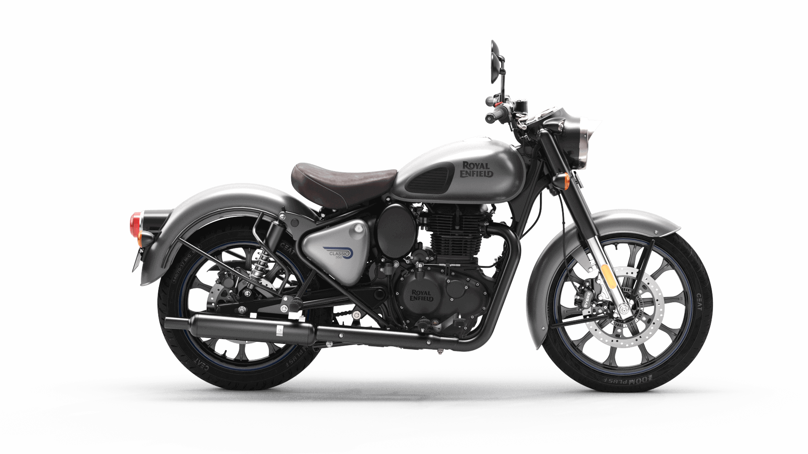

The new Royal Enfield era starts now. Celebrating 120 years of engineering and design achievements, extraordinary people and unforgettable rides. Now Royal Enfield introduces the extraordinary 2022 Royal Enfield Continental GT 650 120th Anniversary , Interceptor INT 650 120th Anniversary and stunning new model the Royal Enfield SG650 Concept bike showcased at EICMA 2021. A total of 480 units worldwide (120 for North America), the new 120 Year Anniversary Edition models bring craftsmanship to a completely new level for a mass manufacturer not see outside of 6 figure custom bikes. Hand crafted, hand painted and painstakingly detailed are just words but a picture says a thousands words.Royal Enfield is building it’s bike awareness and empire in North America. For us in the USA and Canada, think of Royal Enfield as the Harley-Davidson of India, for that is exactly, friend, what it is there.1901. The year of the first Royal Enfield motorcycle and we’ve honoured it ever since.
This November, 120 years to the same month when Royal Enfield introduced its first ever motorcycle, we raise a toast to those times past. That’s 120 years of endurance and adaptability, of great challenges and even greater fun. Above all, 120 years of outstanding motorcycles and their enthusiastic riders.Marking this important milestone in our journey, we are proud to present the 120th Year Anniversary Edition Continental GT and Interceptor 650. An opportunity for motorcycling enthusiasts across the globe to partake in owning a commemorative edition motorcycle and become a part of the the rich legacy of the brand that you built with us.A limited edition run of only 480 motorcycles, distributed as 120 units each for India, Europe, Americas and South-East Asia. The 120 units for each region split as 60 Continental GT 650 and 60 Interceptor INT 650.
It was in November 1901 that Royal Enfield launched its first motorcycle at the Stanley Cycle Show in London, kickstarting the journey of an iconic brand which has since inspired millions in their pursuit of pure motorcycling over the last 120 years. From these humble beginnings in 1901, Royal Enfield, the oldest motorcycle brand in continuous production, is marking this milestone year with the 120th Year Anniversary Edition of its popular 650 Twin motorcycles—the INT 650 and Continental GT 650—revealed at EICMA 2021.In a proud celebration of its 120-year legacy, Royal Enfield reached back into the brand’s rich heritage of building authentic handcrafted motorcycles. Along with unique black and chrome color schemes and a selection of Genuine Motorcycle Accessories, these limited-edition anniversary models feature artisan-crafted die-cast brass tank badges and classic Royal Enfield hand-painted pinstripes. A limited run of only 480 units worldwide—120 in each of its four regions for a total of 60 Continental GT 650 and 60 INT 650 units bound for North America—present a unique opportunity for enthusiasts to own a piece of motorcycling history.The 120th Year Anniversary Edition INT 650 and Continental GT 650 have been designed and handcrafted by the company’s teams across the UK and India. The exquisite brass badges are crafted in collaboration with the Sirpi Senthil family, multi-generational artisans from the temple town of Kumbakonam, Tamil Nadu, India. Particularly specialized in making the elegant brass effigies for the most revered temples in India for centuries, this is the first time that these artisans have collaborated with any automotive brand.The unique, rich black-chrome tank color scheme has been developed in-house, with Royal Enfield’s industry-leading chroming technology at the company’s original 1950’s manufacturing factory in Thiruvottiyur, Chennai, India. The motorcycles are chromed with an alternate, sustainable trivalent eco-friendly process. To complement the black chrome tanks, both the Continental GT 650 and Interceptor 650 will feature, for the first time, completely blacked out components, with the engine, silencer and other elements in an array of black color schemes. The motorcycles will also come equipped with a range of Genuine Motorcycle Accessories such as fly screens, engine guards, heel guards, touring and bar-end mirrors among others in a defining black to accent the overall design.